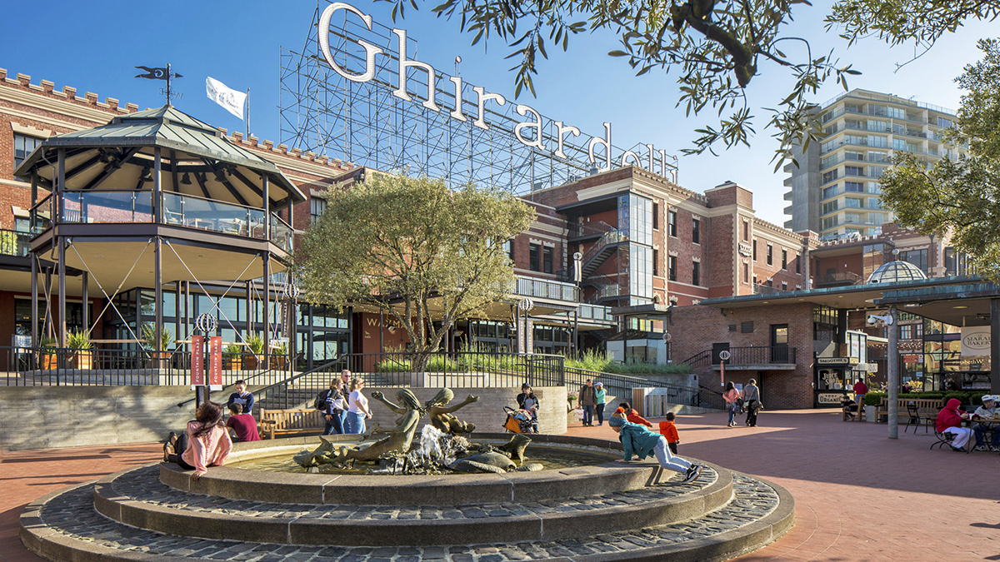

Recommedations by Terrell
In no particular order:
1. Visit Alcatraz. Make sure that you get your tickets as soon as you can possibly buy them. Go online and check availability. If for some reason, you cannot get your tickets online because of being sold out, don’t panic. You can still get on a tour. I would recommend getting to the ticket area and asking about “standby” tickets. There are several cancellations on every boat ride to Alcatraz. Plan on staying on Alcatraz island for at least two hours. It is an awesome tour. Make sure that you get the audio tour. The audio tour is great because you can stop the audio and spend any extra time to check out different cells or parts of the island. You can get back and depart the island on the boat at several different times throughout the day. You can spend a few hours or an entire day on this tour. Take a water bottle and a few snacks, these items can be expensive on the island. Also, make sure that you take time to enjoy the views of the City from the Ferry. You can get to Pier 33 for Alcatraz departures by taking the F-line trolley line. There is no parking in the area. MAKE SURE THAT YOU HAVE A JACKET!
2. Bike the Golden Gate Bridge. This has been a favorite of The Baldwin family for quite a few years. There are several options for this activity. I would recommend renting the bikes in the Fisherman’s wharf area and then riding them from the wharf all the way across the bridge and into Sausalito. You can then take the boat back across the Bay. This can be a 4 hour activity or an all day activity. If you are going to ride to Sausalito, make sure that you know when the last boat leaves to get across the bay. You can also drop off your bike before you get on the boat. There are several stops that you can make on this bike ride. There are two steep hills on this ride but it is very easy to get off your bike and push it up the hill. Most people will be doing this so don’t feel intimidated. The views are spectacular, you will take a lot of pictures and see a lot of cool stuff! This is an awesome and fun way to see the Golden Gate bridge. You can stop whenever you want. On your bike, you can ride along the beach front and even stop at Crissy Field before moving up the hill to the Bridge. You can also rent bikes by the hour in the downtown area of San Francisco if you do not want to take the bike tour across the Golden Gate Bridge(I think they are all a pale green color). I would strongly recommend doing this activity, it is great for all ages. You can look for bike rental coupons in several of the local travel magazines. We were able to get our bike rental for half price. You cannot visit SF and not cross the GG bridge by either foot, bike or car. It takes about an hour to walk across and back.
3. Cable Cars to Fisherman’s wharf. This is one of our favorite things to do while in the City. If you are catching the cable car at Powell and Market street, DO NOT WAIT IN THE LONG LINE! To avoid the long line simply walk up Powell street 2 blocks (look for a brown small sign near the side of street that looks similar to a parking meter) and wait for the cable car to stop and the conductor will allow you to get on the car. This is a locals trick that saves you an hour or so waiting in line. When you get to the wharf by Cable car, you can then return by cable car or if you do not want to wait in the line for the return ride there is an alternate course. The alternate course is called the “F-Line”. It is a street car that goes around the wharf and takes you back to Powell and Market street. Also, if you are wanting to ride the Cable cars, you can pay 7.00 for a one way ride or a day pass for 20.00. I would recommend taking a cable car to Fisherman's Wharf area and then taking the F-line back to Market and Powell.
4. Girls will love the San Francisco shopping center located at the intersection of Powell and Market street. You can drop some serious cash in here. A lot of upscale stores. Just a warning... A Four story Nordstrom. There is a high class cafeteria in the bottom of the mall that is pretty good and cost affordable. There are also several other places to eat in this mall. You can spend a lot of cash and time in this place. I prefer the Free samples at the Ghirardelli store on the first floor.
5. Chinatown. A lot of interesting stuff in this area. This is not one of my favorite places. We usually go here to take a few pictures and get some cheap souvenirs. If you have never been there, you must check it out. While you are entering Chinatown, you can also check out Union Square while you are in the downtown area. Chinatown consists of several city blocks. I would recommend seeing the Chinatown gate (entrance to Chinatown), for sure.
6. Lombard Street. The crookedest street in the world. You should drive down this street. The wait can be long but it is worth it. You can also see this street from the top of the Cable Car line. You can also get off the cable car at the top of Lombard street and walk down to the bottom. The best view is from the bottom.
7. Oakland Temple. You can go to Google maps and get the driving instructions to get to this site. The view from the top of the temple grounds is one of the best in the area. You do not need to go inside the temple to enjoy the views. The temple grounds are amazing.
8. Ride BART if you get a chance. If you are going to the Oakland Coliseum to watch a baseball game and are staying in the San Francisco area, you may want to ride the BART. It is much better and quicker to avoid traffic. There are several modes of public transportation to get you to AT & T Park to watch the Giants play. I would highly recommend that you know your exit route from the game before you go inside the stadium. If you wait until after the game, you will be caught up in thousands of people. It's much different than riding the CVTD!
9. Ferry Building. This is a cool building. You can walk along the waterfront and enjoy the amenities of the Ferry building. A lot of small restaurants in the Ferry Building. A lot of variety to choose from in this building.
10. When traveling down to AT&T park. Plan to arrive early. If you are going by MUNI train make sure that you have CLIPPER CARDS so that you will not have to wait in line to buy tickets for the return trip from the park to the BART station. When you arrive early, you can walk around the park and see a lot of cool stuff. I hate the Giants but this is a really cool park. Be prepared to spend a lot of cash on everything in this facility! Make sure you walk around the park to the right field area. It is pretty awesome. If the game is a 7:05 start, I would plan on getting there at 5:00. You can then walk around, there are plenty of places to eat around the park that can save you a few bucks from having to eat inside.
11. Ghirardelli Square. If you want a great place to enjoy some dessert and enjoy some World Famous Chocolate, this is the place! They also give out a lot of free samples.
12. Fisherman's Wharf. This is a huge tourist trap. However, if you have never been to San Francisco you must check out this spot. Great Sourdough bread at the Boudin company. It is also a great place to eat as well. Also, there are a lot of street entertainers in this area. If you stop and watch it is customary to tip them a dollar or so.
13. Marin headlands (North side of the Golden Gate Bridge). If you have a car, this is the place to go for cool pictures of the city. On a clear day, you can see for miles in each direction. When you travel across the bridge, you can stop at the lookout point near the bridge or take the first exit and head to your left up the hill. If you are going across the bridge to Marin County, you are not that far from Muir Woods National Park. It is about a twenty minute beautiful drive from highway 101. The park is spectacular. On the return trip, you can ride along the beach for a few miles before heading up the hill to cross the GG bridge.
 To go places and do things that have never been done before – that’s what living is all about.